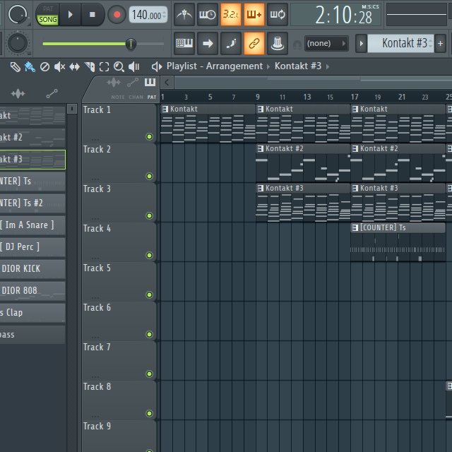

DAWs

What is a DAW?
DAW stands for 'Digital Audio Workstation'. It's an environment in which you can use different sounds and plugins to create music. You can use sounds that already exist, or even record your own using a microphone or instrument and use those instead.
The DAW on the left is Fruity Loops, one fo the most popular DAWs, especially for beginners due to it's price point being lower and how simple it is to use, even if you don't know how to produce music.
What other options are there?
The DAW on the right is a different one, called Ableton. This one is also widely used, more so in the industry with professionals, as it has a better suite of tools that suit recording in instruments and vocals.
Other options include
(Along with a familiarity score)
- Logic Pro 1
- Pro Tools 2
- Cubase 3
- Reason 12 4